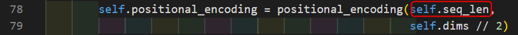
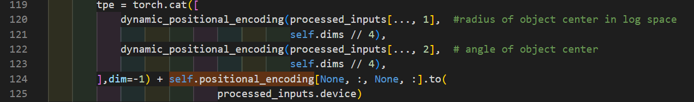
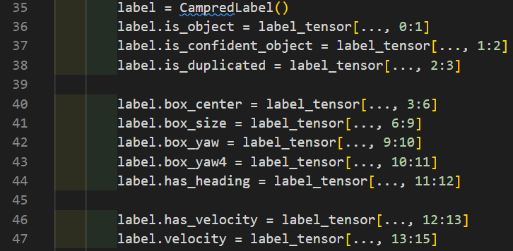
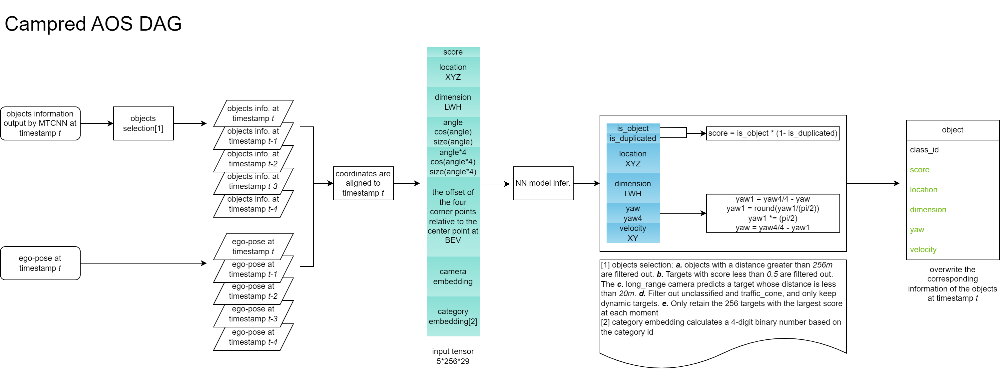
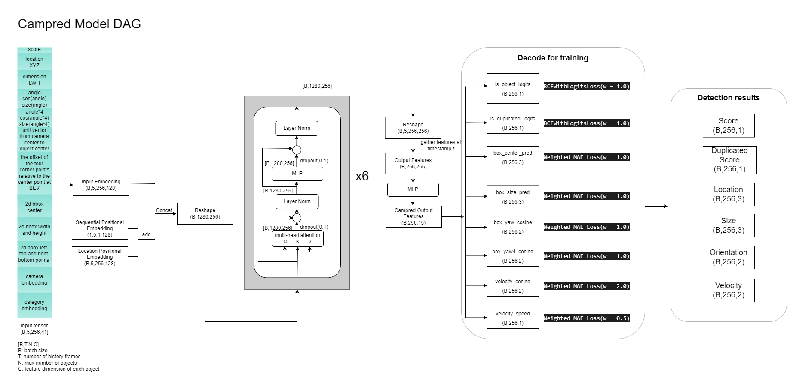

95_WR MS4 Camera Prediction
1. Module task
The Camera Prediction component receives detects from the IV-MTCNN model as input. Through the detection results in the BEV of multi-frame alignment, the 3D Boxes is finally output.
2. Model input
enter:
Multi-Frame Detection Result from Upstream Multi-Task Model, the feature dimension of each object detection result is 41: 41:
Object confidence score
Object category
Object 2D bounding box
Object 3D bounding box (center, size, yaw) in vehicle coordinates
Which camera is this detection from
ego-car movement information (provided as ego pose at each frame):
History 5 -frame vehicle POSE information
3. Dataset
Data pre -processing:
Pre -order frame 3D Boxes fusion:
The 3D Boxes of the previous frame object converts the vehicle POSE information to the current frame to view each box in the current vehicle coordinates.
Two position codes:
Sequential Positional Embedings(temporal positional encoding for objects in different frames, ):shape:[1,5, 1,128]， self.seq_len = 5

Location Positional Embedings(using x/y coordinates of input boxes):shape:[16,5, 256,128]

ENCODINGS dimension before Backbone:
original shape:[16,5, 256,256]
after reshaping : [16, 1280, 256]
Enter Tensor dimension:
[B, T, N, C] = [16, 5, 256, 41]
Output Tensor dimension:
[16, 256, 15]
GT：
Dimension: [16, 256, 15]
The meaning of each channel in GT:

4. Model Design && DAG
DAG-AOS
DAG-Model-Architecture
- 